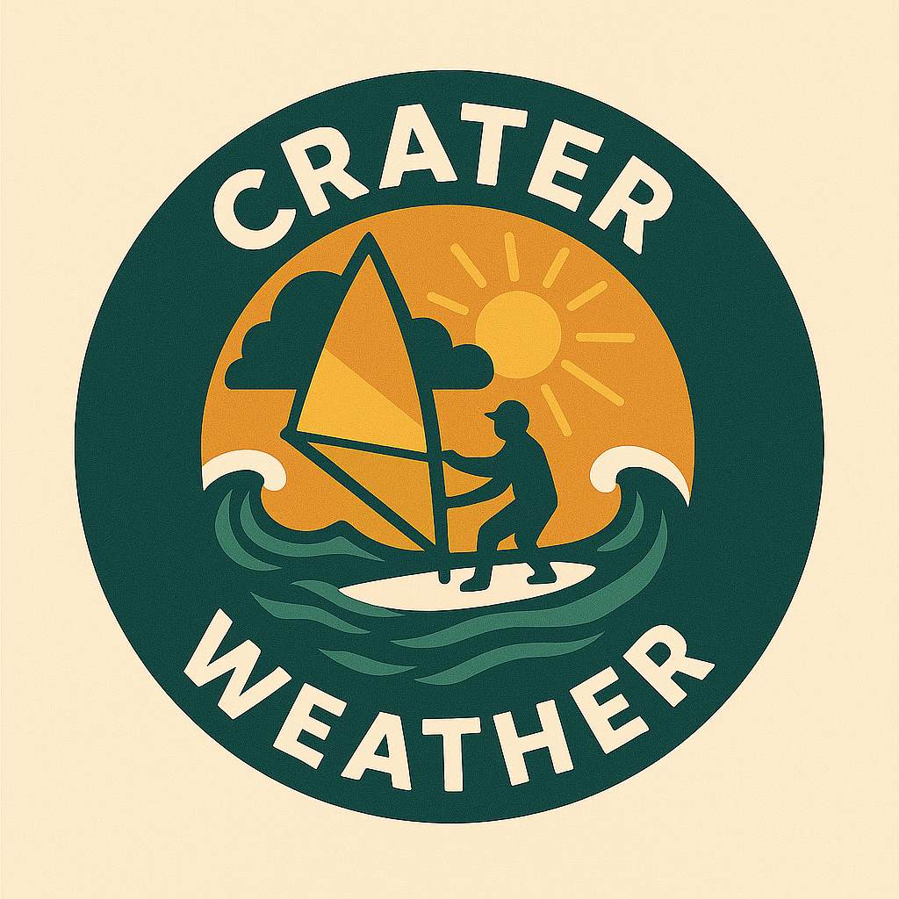
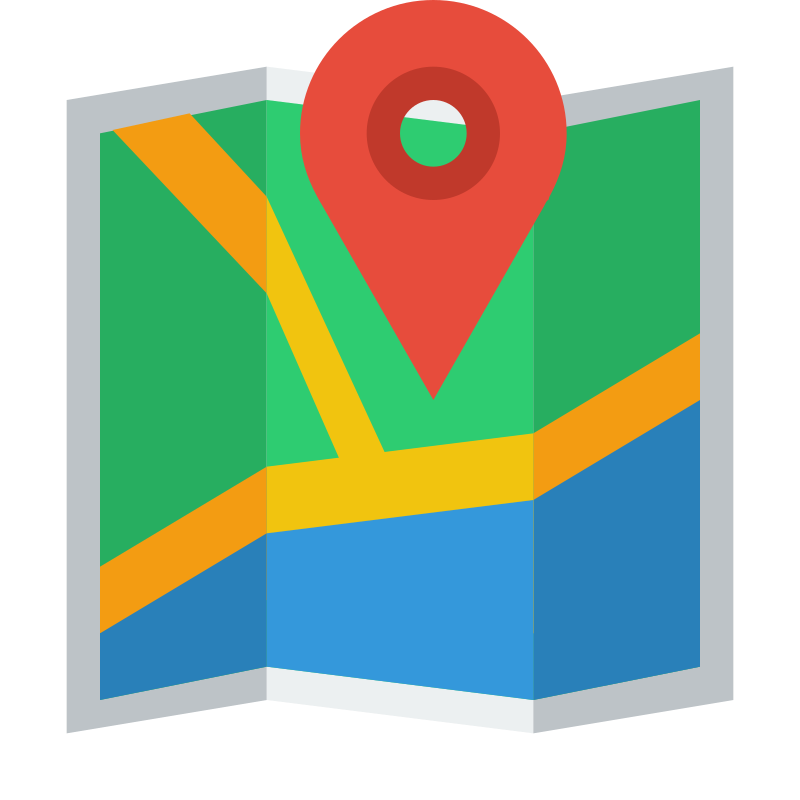

<!DOCTYPE html>
<html lang="en">
  <head>
    <meta charset="utf-8" />
    <meta name="viewport" content="width=device-width, initial-scale=1.0" />
    <title>Surf Spot Weather</title>
    <link rel="stylesheet" href="https://unpkg.com/leaflet/dist/leaflet.css" />
    <link rel="stylesheet" href="surfseeker.css" />
    <style>
      #map {
        height: 97vh;
      }

      .leaflet-layer,
      .leaflet-control-zoom-in,
      .leaflet-control-zoom-out,
      .leaflet-control-attribution {
        filter: invert(100%) hue-rotate(180deg) brightness(95%) contrast(90%);
      }

      .overlay-text-bottom {
        position: absolute;
        bottom: 0%;
        left: 80px;
        transform: translate(-50%, -50%);
        font-weight: bold;
        color: rgb(84, 101, 255);
        background-color: rgb(252, 236, 203);
        border-radius: 20%;
        padding: 10px;
        text-shadow: 2px 2px 2px rgba(139, 139, 139, 0.8);
        z-index: 1000;
        font-family: "Tahoma", "sans-serif";
        font-size: 24px;
      }

      .wind-marker {
        width: 30px;
        height: 30px;
        transform-origin: center center;
      }

      .wind-table {
        border-collapse: collapse;
        width: 100%;
        font-size: 12px;
      }
      .wind-table th,
      .wind-table td {
        font-family: "Consolas", "sans-serif";
        border: 0;
        padding: 1px 1px;
        font-size: 10px;
        text-align: left;
      }
      .wind-table tr.good {
        background-color: #b2f2bb;
      }
      .wind-table tr.verygood {
        background-color: #28ff45;
      }

      .leaflet-popup-content-wrapper {
        background-color: rgb(252, 236, 203);
      }

      .nav-btn {
        display: inline-block;
        margin-top: 6px;
        padding: 5px 10px;
        background: rgb(252, 236, 203);
        color: white;
        text-decoration: none;
        border-radius: 4px;
        font-size: 14px;
      }
      .nav-btn:hover {
        background: #91a8c0;
      }

      .spot-label {
        font-size: 8px;
        font-weight: bold;
        color: #333;
        background: rgba(252, 236, 203, 0.8);
        padding: 2px 4px;
        border-radius: 3px;
      }

      @media (max-width: 600px) {
        .wind-table {
          font-size: 10px;
        }
        .leaflet-popup-content {
          max-width: 250px !important;
        }
      }
    </style>
  </head>

  <body style="background-color: rgb(0, 0, 0)">
    <div id="map"></div>
    <div class="overlay-text-bottom"></div>

    <script src="https://unpkg.com/leaflet/dist/leaflet.js"></script>
    <script src="https://cdn.jsdelivr.net/npm/axios/dist/axios.min.js"></script>

    <script>
      const map = L.map("map").setView([62.939, 23.184], 9);
      L.tileLayer("https://{s}.tile.openstreetmap.org/{z}/{x}/{y}.png", {
        attribution: "&copy; OpenStreetMap contributors, Crater Surfers",
      }).addTo(map);

      function isAppleDevice() {
        // Grab the user‑agent string and convert it to lower case for easy matching
        const ua = navigator.userAgent.toLowerCase();
      
        // Look for identifiers that appear only on Apple platforms
        const isIOS   = /iphone|ipad|ipod/.test(ua);
        const isMacOS = /macintosh|mac os x/.test(ua);
      
        // Return true if either iOS or macOS is detected
        return isIOS || isMacOS;
      }
      
      // Create custom SVG arrow marker
      function createWindIcon(direction, speed, best_dir) {
        let color = "#6e571a";
        if (speed >= 7 && direction >= best_dir[0] && direction <= best_dir[1])
          color = "#00ff00";
        else if (
          (speed >= 3 &&
            direction >= best_dir[0] &&
            direction <= best_dir[1]) ||
          (direction >= best_dir[2] && direction <= best_dir[3])
        )
          color = "#008000";

        const svg = `
        <svg xmlns="http://www.w3.org/2000/svg" width="30" fill="none" height="30"
             viewBox="0 0 24 24" style="transform: rotate(${
               direction + 180
             }deg)">
          <path d="M21 12C21 16.9706 16.9706 21 12 21C7.02944 21 3 16.9706 3 12C3 7.02944 7.02944 3 12 3C16.9706 3 21 7.02944 21 12Z" stroke="${color}" stroke-width="2"/>
          <path d="M12 8L12 16" stroke="${color}" stroke-width="2" stroke-linecap="round" stroke-linejoin="round"/>
          <path d="M15 11L12.087 8.08704C12.039 8.03897 11.961 8.03897 11.913 8.08704L9 11" stroke="${color}" stroke-width="2" stroke-linecap="round" stroke-linejoin="round"/>
        </svg>`;
        return L.divIcon({
          className: "wind-marker",
          html: svg,
          iconSize: [24, 24],
          iconAnchor: [12, 12],
        });
      }

      // Fetch forecast from Yr.no
      async function fetchForecast(lat, lon) {
        const res = await axios.get(
          `https://api.met.no/weatherapi/locationforecast/2.0/complete?lat=${lat}&lon=${lon}`
        );
        return res.data;
      }

      // Build forecast table
      function buildForecastTable(timeseries, bestDirs) {
        const rows = timeseries
          .slice(0, 48)
          .map((entry) => {
            const finnishTime = new Date(entry.time).toLocaleString("fi-FI", {
              timeZone: "Europe/Helsinki",
            });
            const wind = entry.data.instant.details.wind_speed;
            const gust = entry.data.instant.details.wind_speed_of_gust;
            const dir = entry.data.instant.details.wind_from_direction;
            const temperature = entry.data.instant.details.air_temperature;
            const bestwinddirs =
              (dir >= bestDirs[0] && dir <= bestDirs[1]) ||
              (dir >= bestDirs[2] && dir <= bestDirs[3]);
            const isGood = wind >= 5 && wind < 7 && bestwinddirs;
            const isVeryGood = wind >= 7 && bestwinddirs;

            return `
          <tr class="${isVeryGood ? "verygood" : isGood ? "good" : ""}">
            <td>${finnishTime.slice(0, -3)}</td>
            <td>${wind.toFixed(1)}</td>
            <td>${gust.toFixed(1)}</td>
            <td>${Math.round(dir)}°</td>
            <td>${temperature.toFixed(1)}</td>
          </tr>`;
          })
          .join("");

        return `
        <table class="wind-table">
          <tr><th>Time</th><th>Wind</th><th>Gust</th><th>Dir</th><th>Temp</th></tr>
          ${rows}
        </table>`;
      }

      let geoLayer;
      let spotData;

      // overlay logo
      document.querySelector(".overlay-text-bottom").innerHTML =
        '<a href="https://github.com/naapurinpojat/CraterWeather/" target="_blank"></a>';

      async function refreshSpots() {
        if (!spotData) return;
        if (geoLayer) map.removeLayer(geoLayer);

        geoLayer = L.geoJSON(spotData, {
          style: function (feature) {
            if (
              feature.geometry.type === "Polygon" ||
              feature.geometry.type === "MultiPolygon"
            ) {
              return {
                color: "red",
                fillColor: "red",
                fillOpacity: 0.3,
                weight: 2,
              };
            }
          },
          onEachFeature: function (feature, layer) {
            if (feature.geometry.type !== "Point") {
              layer.bindPopup(
                `<b>No-surf area:</b> ${feature.properties.name || ""}`
              );
            }
          },
          pointToLayer: function (feature, latlng) {
            const marker = L.marker(latlng);
            fetchForecast(latlng.lat, latlng.lng).then((data) => {
              const timeseries = data.properties.timeseries;
              const current = timeseries[0].data.instant.details;
              const wind = current.wind_speed;
              const dir = current.wind_from_direction;
              const temperature = current.air_temperature;

              const gmapsUrl = `https://www.google.com/maps/dir/?api=1&destination=${latlng.lat},${latlng.lng}`;
              const windyUrl = `https://www.windy.com/${latlng.lat}/${latlng.lng}/wind?${latlng.lat},${latlng.lng},13`;
              const applemapsUrl = `https://maps.apple.com/?ll=${latlng.lat},${latlng.lng}`;
              let mapsUrl = "";
              if (isAppleDevice()) {
                 mapsUrl = applemapsUrl;
              } else {
                 mapsUrl = gmapsUrl;
              }
              
              marker.setIcon(
                createWindIcon(dir, wind, feature.properties.best_wind_dir)
              );
              const table = buildForecastTable(
                timeseries,
                feature.properties.best_wind_dir
              );

              marker.bindPopup(`
              <b>${feature.properties.name}</b><br><hr>
              Best wind: ${
                feature.properties.best_wind_dir[0]
              }°–${feature.properties.best_wind_dir[1]}°
              ${
                typeof feature.properties.best_wind_dir[2] !==
                "undefined"
                  ? `and : ${feature.properties.best_wind_dir[2]}°–${feature.properties.best_wind_dir[3]}<br>`
                  : "<br>"
              }
              Current wind: ${wind.toFixed(1)} m/s (${Math.round(dir)}°)<br>
              Current temperature: ${temperature.toFixed(1)} °C<br>
              Notes: ${feature.properties.notes}<br>
              <div style="height:300px;overflow:auto;">${table}</div><br><hr>
              <a class="nav-btn" href="${mapsUrl}" target="_blank"></a>
              <a class="nav-btn" href="${windyUrl}" target="_blank"></a>
            `);
            });
            return marker;
          },
        }).addTo(map);
      }

      // Lataa spotit ja käynnistä
      fetch("spots.geojson")
        .then((res) => res.json())
        .then((spots) => {
          spotData = spots;
          refreshSpots();
          setInterval(refreshSpots, 1000000);
        });

      // TEE GLOBAALIKSI surfseeker.js:lle (TÄRKEÄ: tämän pitää olla script-tagissa)
      window.surfApp = { map, refreshSpots };
    </script>

    <!-- Surfseeker UI (ei module, koska tiedosto käyttää window.surfAppia) -->
    <script src="surfseeker.js" defer></script>
  </body>
</html>
